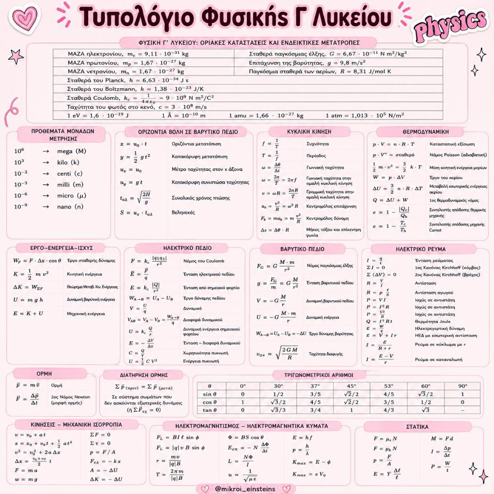

Όλη η Φυσική της Γ' Λυκείου σε ένα οργανωμένο τυπολόγιο. Περιλαμβάνει τους σημαντικότερους τύπους και τις βασικές σχέσεις της ύλης, ώστε να έχεις άμεση πρόσβαση σε ό,τι χρειάζεται κατά τη μελέτη, την επανάληψη και την προετοιμασία για τις Πανελλαδικές.